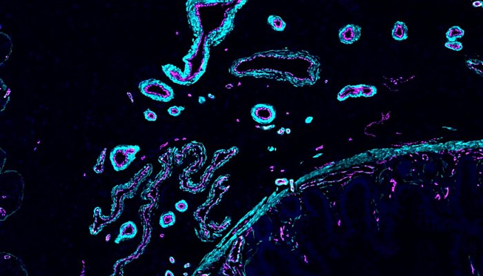
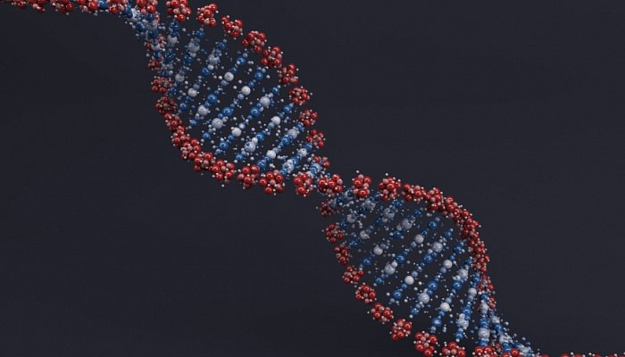

Новости недели
Фотография сооснавателейНа фотографии представлены 3 сооснователя компании
Последовательность событийПервый большой шаг к картированию клеток всего тела человека!
(21.11.2024)

В 2016 году был создан консорциум Human Cell Atlas — его целью стало полное картирование человеческого
тела на клеточном уровне. Первые результаты работы опубликованы в журналах Nature Portfolio — подборка
статей описывает разработку методов анализа и интеграции данных, создание атласов отдельных тканей и
систем органов, а также механизмы и закономерности, обнаруженные в ходе работы над атласом.
(Ссылка
на полную версию статьи)
Большие тандемные повторы определяют чувствительность раковых клеток к противоопухолевым препаратам!
(23.11.2024)

Неизбежные столкновения систем репликации ДНК и транскрипции способствуют геномной нестабильности,
свойственной опухолевым клеткам. Согласно исследованию в Nature Cancer, в результате таких столкновений
образуются в том числе большие тандемные повторы, наличие которых ассоциировано с неблагоприятным
прогнозом у онкологических больных. Однако содержащие эти повторы клетки обладают повышенной
чувствительностью к ряду противоопухолевых препаратов.
(Ссылка
на полную версию статьи)